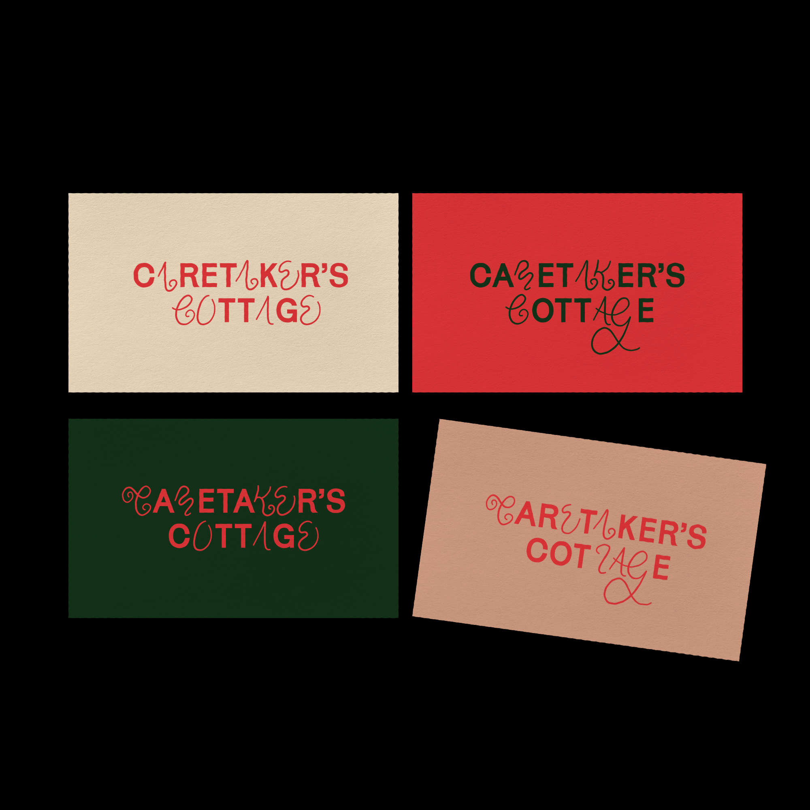
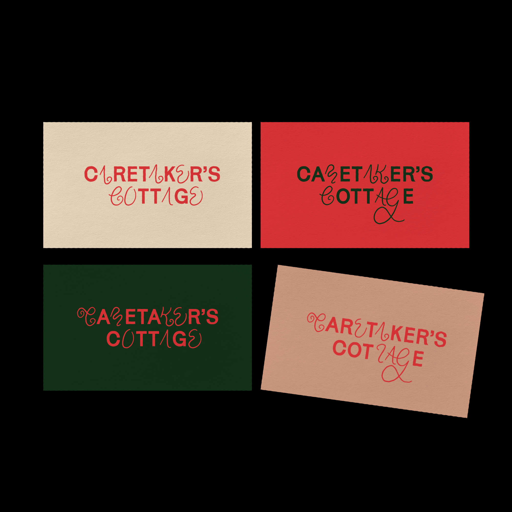
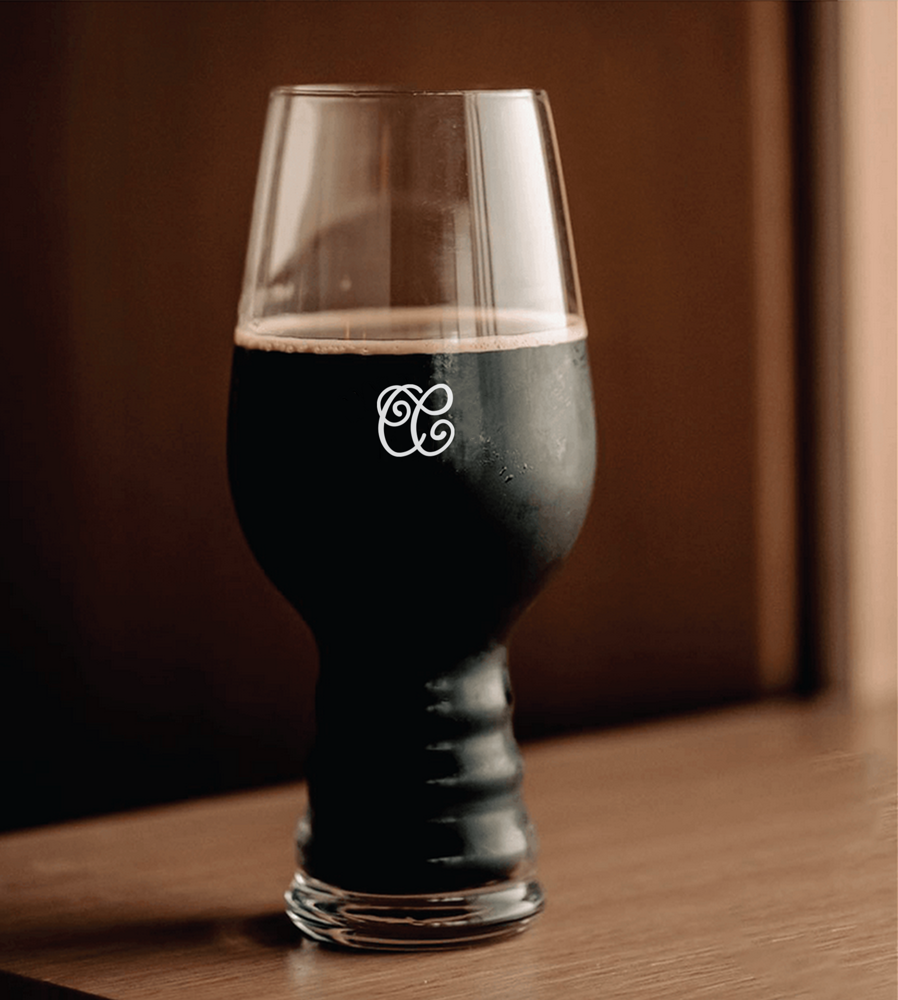
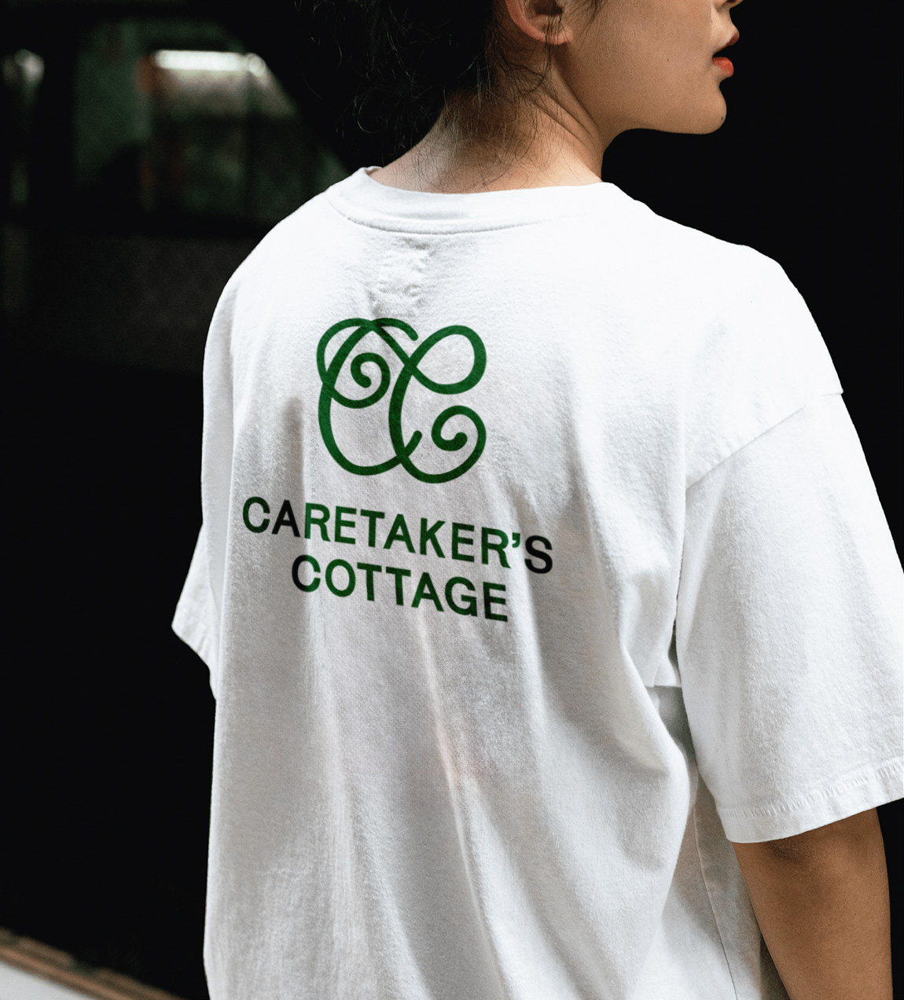

Caretaker's Cottage
A self initiated branding project for Melbourne public bar, Caretaker's Cottage. The design combines the heritage of the site with the contemporary and inviting atmosphere the bar has already created. The branding is applied consistently across a range of touchpoints, including menus, apparel and glassware, in a way that will resonate with the bar's diverse customer base.
 


